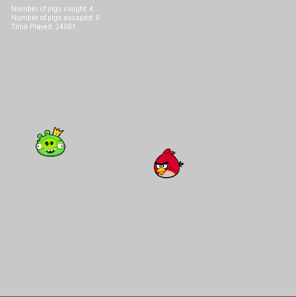

The simple chase game I made draws inspiration from Angry Birds but in this case rather than flinging a bird at a pig you need to chase and catch the pig. (jump to game)
The game has 4 different starting positions for the player, top, bottom, left and right. The computer player always starts in the middle. The point system is very simple, if the player catches the computer the player gets a point, if the computer escapes the computer gets a point.
The player controls their character using the WASD keys. The algorithm for the computer is very simple. The computer just looks at the position of the player on both the X and Y axis and moves in the direction away from the player on each axis. When the computer either escapes or is caught the game resets to the starting positions for the next round.
With all this implemented I had a basic game set up. It looked like this:
Upon playing the game a little I decided that I could make it more interesting. I made the following modifications: